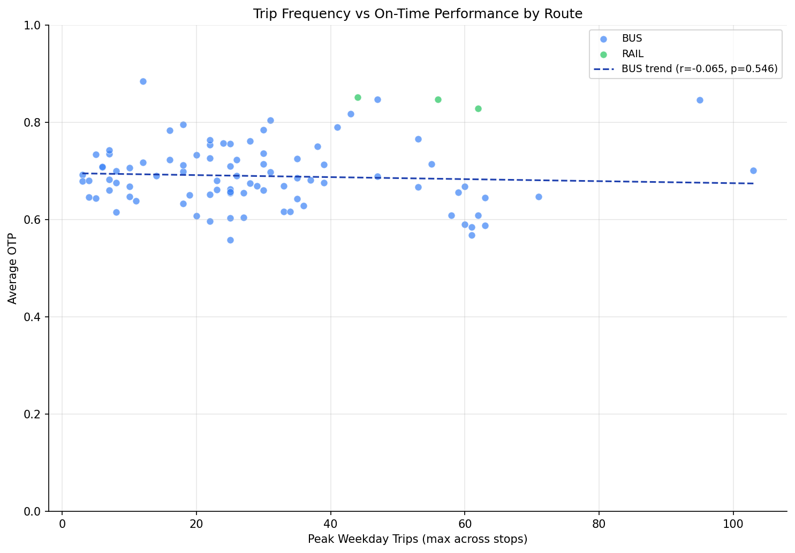

Analysis
10: Trip Frequency vs OTP
Route and Service Drivers
Coverage: 2019-01 to 2025-11 (from otp_monthly).
Built 2026-06-07 14:04 UTC · Commit ebc369b
Page Navigation
Analysis Navigation
Data Provenance
flowchart LR
10_frequency_vs_otp(["10: Trip Frequency vs OTP"])
t_otp_monthly[("otp_monthly")] --> 10_frequency_vs_otp
01_data_ingestion[["Data Ingestion"]] --> t_otp_monthly
u1_01_data_ingestion[/"data/routes_by_month.csv"/] --> 01_data_ingestion
u2_01_data_ingestion[/"data/PRT_Current_Routes_Full_System_de0e48fcbed24ebc8b0d933e47b56682.csv"/] --> 01_data_ingestion
u3_01_data_ingestion[/"data/Transit_stops_(current)_by_route_e040ee029227468ebf9d217402a82fa9.csv"/] --> 01_data_ingestion
u4_01_data_ingestion[/"data/PRT_Stop_Reference_Lookup_Table.csv"/] --> 01_data_ingestion
u5_01_data_ingestion[/"data/average-ridership/12bb84ed-397e-435c-8d1b-8ce543108698.csv"/] --> 01_data_ingestion
t_route_stops[("route_stops")] --> 10_frequency_vs_otp
01_data_ingestion[["Data Ingestion"]] --> t_route_stops
t_routes[("routes")] --> 10_frequency_vs_otp
01_data_ingestion[["Data Ingestion"]] --> t_routes
d1_10_frequency_vs_otp(("polars (lib)")) --> 10_frequency_vs_otp
d2_10_frequency_vs_otp(("scipy (lib)")) --> 10_frequency_vs_otp
classDef page fill:#dbeafe,stroke:#1d4ed8,color:#1e3a8a,stroke-width:2px;
classDef table fill:#ecfeff,stroke:#0e7490,color:#164e63;
classDef dep fill:#fff7ed,stroke:#c2410c,color:#7c2d12,stroke-dasharray: 4 2;
classDef file fill:#eef2ff,stroke:#6366f1,color:#3730a3;
classDef api fill:#f0fdf4,stroke:#16a34a,color:#14532d;
classDef pipeline fill:#f5f3ff,stroke:#7c3aed,color:#4c1d95;
class 10_frequency_vs_otp page;
class t_otp_monthly,t_route_stops,t_routes table;
class d1_10_frequency_vs_otp,d2_10_frequency_vs_otp dep;
class u1_01_data_ingestion,u2_01_data_ingestion,u3_01_data_ingestion,u4_01_data_ingestion,u5_01_data_ingestion file;
class 01_data_ingestion pipeline;
Findings
Findings: Trip Frequency vs OTP
Summary
There is no meaningful correlation between peak weekday trip frequency and OTP. The previous finding (r = -0.39) was an artifact of using SUM(trips_wd) across stops, which conflated frequency with route length. After correcting to MAX(trips_wd) (peak frequency at any single stop), the correlation vanishes.
Key Numbers
- All routes: Pearson r = 0.03 (p = 0.81, n = 92) -- essentially zero
- Bus only: Pearson r = -0.06 (p = 0.55, n = 89)
- Bus only: Spearman r = -0.11 (p = 0.29)
Methodology Note
The original analysis summed trips_wd across all stops on a route. Because trips_wd is recorded per stop, a route with 50 trips per day and 100 stops produces a sum of ~5,000, while a route with 50 trips per day and 20 stops produces ~1,000. This made the metric a proxy for frequency x stop_count rather than pure frequency. Using MAX(trips_wd) isolates the peak trip frequency at the busiest stop, which is a better measure of how often the route actually runs.
Observations
- Running more trips per se does not degrade OTP. The previous apparent correlation was entirely driven by the confounding of frequency with route length (stop count).
- This result is consistent with Analysis 07's finding that stop count is the real structural predictor -- once route complexity is removed from the frequency metric, the effect disappears.
- Some of the highest-frequency routes (P1 East Busway, RAIL lines) actually have excellent OTP, because they combine high frequency with few stops and dedicated right-of-way.
Implication
PRT should not expect OTP penalties from increasing service frequency on existing routes. The capacity to run more trips does not inherently strain schedule adherence. The real lever for improving OTP is route design (stop count, right-of-way), not service volume.
Caveats
trips_wdinroute_stopsrepresents current weekday frequency, not historical. Frequency may have changed over the analysis period.MAX(trips_wd)captures the peak stop, which for short-turn routes may overstate the frequency experienced by riders at outer stops.- Routes with fewer than 12 months of OTP data are excluded (1 route dropped vs prior version).
- Three correlation tests were run (Pearson all-routes, Pearson bus-only, Spearman bus-only) without multiple-comparison correction. Since all three are non-significant (smallest p = 0.29), correction would not change any conclusion.
Review History
- 2026-02-11: RED-TEAM-REPORTS/2026-02-11-analyses-01-05-07-11.md -- 6 issues (1 significant). Updated METHODS.md to reflect MAX(trips_wd) instead of SUM; documented all three correlation tests; added minimum-month filter (HAVING COUNT >= 12); added NULL filter for trips_wd; replaced manual regression with scipy.stats.linregress; noted multiple-test caveat.
Output

scatter plot with correlation.
No interactive outputs declared.
per-route frequency and OTP summary.
Preview CSV
Methods
Methods: Trip Frequency vs OTP
Question
Is there a correlation between how often a route runs (trip frequency) and its on-time performance? High-frequency routes may suffer from schedule adherence issues like bunching.
Approach
- Compute maximum weekday trips per route from
route_stops(MAX(trips_wd)across all stops, used as a peak frequency proxy). Stops withtrips_wd IS NULLare excluded. - Compute average OTP per route from
otp_monthly, requiring at least 12 months of data (HAVING COUNT(*) >= 12). - Scatter plot of trip frequency vs average OTP, colored by mode.
- Compute Pearson correlation (all routes), Pearson correlation (bus-only), and Spearman rank correlation (bus-only).
Data
| Name | Description | Source |
|---|---|---|
otp_monthly |
Monthly OTP per route | prt.db table |
route_stops |
Trip counts (trips_wd, trips_7d) |
prt.db table |
routes |
Mode classification | prt.db table |
Output
output/frequency_otp.csv-- per-route frequency and OTP summaryoutput/frequency_vs_otp.png-- scatter plot with correlation
Source Code
|
Sources
| Name | Type | Why It Matters | Owner | Freshness | Caveat |
|---|---|---|---|---|---|
| otp_monthly | table | Primary analytical table used in this page's computations. | Produced by Data Ingestion. | Updated when the producing pipeline step is rerun. | Coverage depends on upstream source availability and ETL assumptions. |
Upstream sources (5)
|
|||||
| route_stops | table | Primary analytical table used in this page's computations. | Produced by Data Ingestion. | Updated when the producing pipeline step is rerun. | Coverage depends on upstream source availability and ETL assumptions. |
Upstream sources (5)
|
|||||
| routes | table | Primary analytical table used in this page's computations. | Produced by Data Ingestion. | Updated when the producing pipeline step is rerun. | Coverage depends on upstream source availability and ETL assumptions. |
Upstream sources (5)
|
|||||
| polars | dependency | Runtime dependency required for this page's pipeline or analysis code. | Open-source Python ecosystem maintainers. | Version pinned by project environment until dependency updates are applied. | Library updates may change behavior or defaults. |
| scipy | dependency | Runtime dependency required for this page's pipeline or analysis code. | Open-source Python ecosystem maintainers. | Version pinned by project environment until dependency updates are applied. | Library updates may change behavior or defaults. |